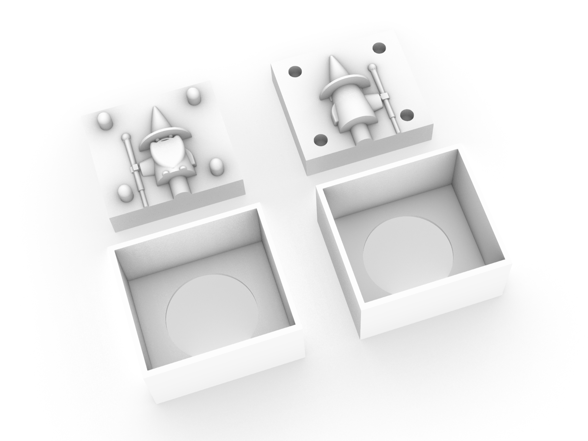

I wanted to do something a little more challenging, but also cute, so I selected this wizard.
I stayed after class and ran my rough Rhino build by Nadya to make sure I was thinking about it correctly. After she approved it, I finished it up at home making sure everything was exact. I designed the mold parts seperately from the box and designed the box like a cake pan so that I can easily push the pieces out.

Nadya for the help with where to put the holes and keys.